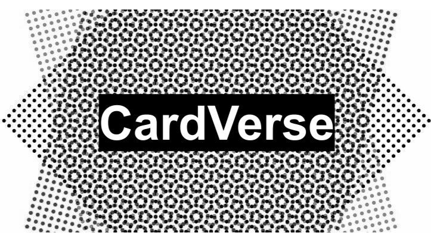

What’s CardVerse?
CardVerse is a machine capable of authenticating, grading, and sorting Magic: The Gathering cards with a throughput of 2 cards per minute with a total capacity of 1000 cards.
I, along with my team, developed this project as my ECE Senior Design Project.
Impact
Won a total of $7000 prize money at UMass’s ‘22-‘23 Berthiaume Innovation Challenge
UMass Business Plan Pitch 2022 $4,500 Second Place UMass Berthiaume Innovation Challenge 2023 $1,000 Top 5 Finalist UMass Entrepreneurship ULaunch 2022 $1,500 First Place
Goals and Motivation
Collectible card games (CCG) or Trading card games (TCG) are types of card games that combine strategic deck-building elements with features of trading cards. One of the earliest and most significant in terms of market and volume is a CCG named Magic: The Gathering.
Despite the enormous market, the industry faces several challenges:
- Sophisticated Counterfeit Cards:
- Unnoticeable to the naked eye
- Artificial Alterations on Defects:
- Ink tweaks to mask artifacts
- Rebacked Cards (Splicing 2 Cards together)
- Poor Card Conditions (Artifacts):
- Bends
- Dents
- Scratches
Given these issues, it becomes crucial to have a card graded and authenticated by a human expert before buying or selling. However, the current pipeline faces challenges with a scarcity of human experts and a large number of customers. This results in an extremely time-consuming and expensive process.
This is where CardVerse comes into play.
The project has 4 primary objectives:
- Artifact & Defects Detection:
- Trained a machine learning model (YOLOv8) on our custom dataset, which consisted of 500 cards evaluated by human experts.
- The model achieved a 97% accuracy in detecting defects when tested on a separate set of cards.
- Authenticity Detection:
- To determine the authenticity of a given card, we examined two aspects:
- Weight Test
- Since an original MTG card typically weighs between 1.7 and 1.8 grams, the system employs a weighing scale to identify counterfeit cards early in the pipeline.
- Rosette Pattern / Green Dot Test
- Designed an image processing pipeline (pattern matching & contouring) to conduct tests on the 40X zoom images of the card’s rosette pattern and the so-called green dot.
- Achieved a 97% accuracy in authenticating a MTG card.
- Weight Test
- To determine the authenticity of a given card, we examined two aspects:
- Grading Schema:
- Developed a precise grading algorithm that objectively evaluates the condition and quality of the cards. The algorithm considers data points inferred from factors such as the type, number, and intensity of the defects mentioned above.
- Sorting Mechanism:
- The custom-built gantry system sorts the cards based on the output directed by the grading system.
System Design and Results
1. Software Engineering
- The machine comprises three stepper motors, two cameras, an imaging chamber equipped with 16 LEDs, a weighing scale, and a vacuum pump.
- The system operates in conjunction with a Jetson Nano for executing inferences at the edge and a Raspberry Pi 4 for controlling the gantry, weighing scale, and imaging chamber.
- MQTT protocol was employed for communication between the Jetson Nano and Raspberry Pi 4.
2. Machine Learning & Image Processing
- Artifacts & Defects Trainning

- Authenticity Detection
3. Embedded Systems
- Artifacts & Defects Trainning
4. Component Design & Fabrication
- Artifacts & Defects Trainning